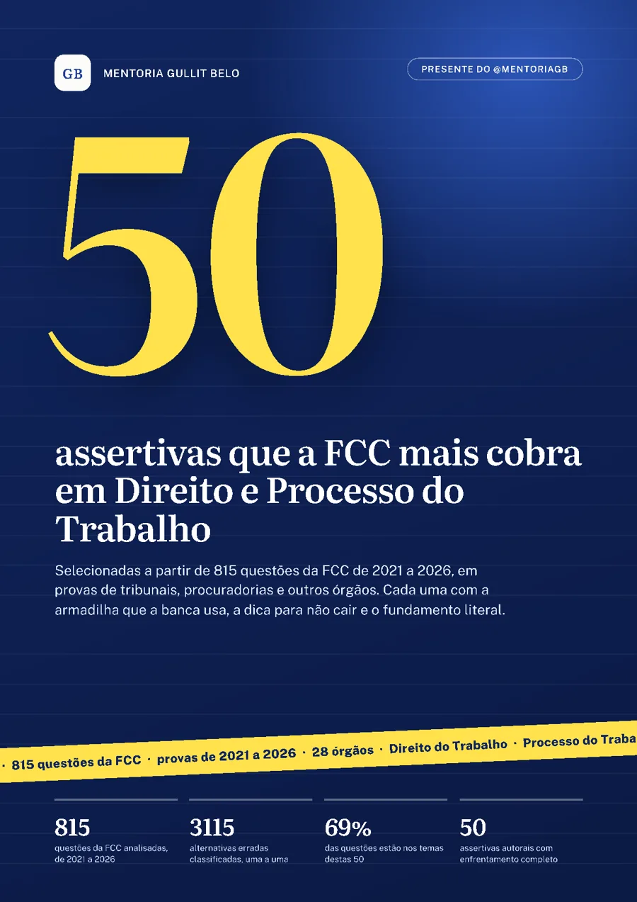
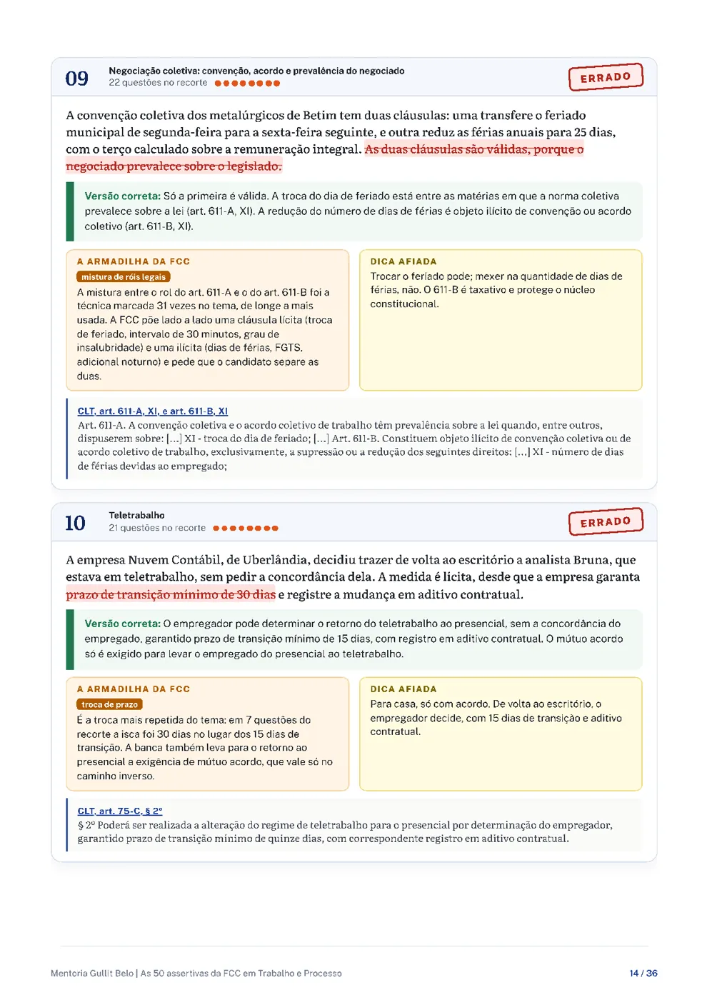

Escolhidas a partir de 815 questões da banca de 2021 a 2026, em tribunais, procuradorias e outros órgãos. Cada uma vem com a armadilha que a FCC usa naquele ponto, uma dica curta e a lei ou a súmula literal.

São do PDF, com a resposta comentada do jeito que vem lá.
As trocas mais usadas nas 3.115 alternativas erradas de Trabalho e Processo.

O PDF libera aqui mesmo, assim que você enviar. Com o e-mail e o concurso, eu aviso quando sair material novo para a sua prova.
Julgue as 50 primeiro, sem consulta, e só depois confira a armadilha e a dica de cada uma. Em 7 dias, refaça as que errou.